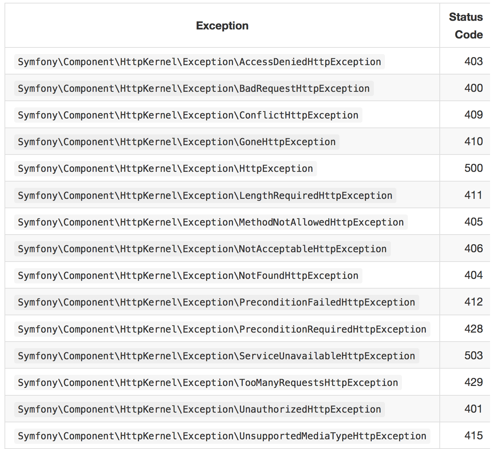
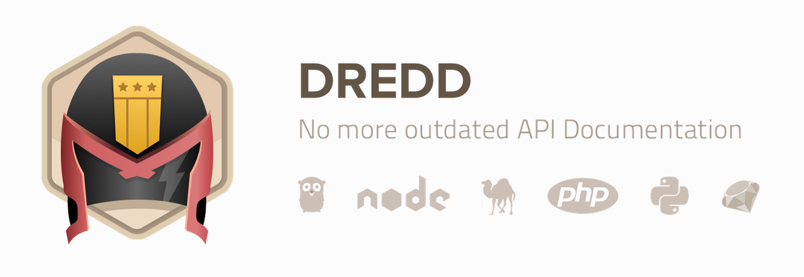

Presented by Milan Popović / @komita1981
PHP developer
Work for Navus Consulting Gmbh
I like to learn and share knowledge
Active member of PHP Srbija
Why Laravel?
Enables rapid development
Stable and well tested
Community support
Documentation
Learning resources
Easy to recruit developers
LTS
Why Laravel for quick API development?
DB Migration
DB seeding
Model factory
Form request
Testing
3rd Party Packages
Version control for you DB schema
Laravel Schema facade provides database agnostic support for creating and manipulating tables
// Create new migration
php artisan make:migration create_users_table
// Run migration
php artisan migrate
// Rollback migration
php artisan migrate
Sample/Test data for your DB
// Create new seeder
php artisan make:seeder UsersTableSeeder
// Run seeders
php artisan db:seed
// Run seeders v2
php artisan migrate --seed
// Run single seeder
php artisan db:seed --class=UsersTableSeeder
Default model attributes
Uses Faker for generating values
$factory->define(App\User::class, function (Faker\Generator $faker) {
return [
'name' => $faker->name,
'email' => $faker->email,
'password' => bcrypt(str_random(10)),
'remember_token' => str_random(10),
];
});
Multiple Factory Types - multiple factories for the same Eloquent model class
$factory->defineAs(App\User::class, 'admin', function ($faker) use ($factory) {
$user = $factory->raw(App\User::class);
return array_merge($user, ['admin' => true]);
});
Attach relationships
$factory->define(App\Post::class, function ($faker) {
return [
'title' => $faker->title,
'content' => $faker->paragraph,
'user_id' => function () {
return factory(App\User::class)->create()->id;
},
'user_type' => function (array $post) {
return App\User::find($post['user_id'])->type;
}
];
});
Using factories
// Create three App\User instances...
$users = factory(App\User::class, 3)->make();
// Create three App\User "admin" instances...
$users = factory(App\User::class, 'admin', 3)->make();
// Create App\User user with given name...
$user = factory(App\User::class)->make([
'name' => 'Abigail',
]);
// Persisting Factory Models
$user = factory(App\User::class)->create();
Special class for validating request params and authorizing
Each class has rules() (returns array) and authorize() (returns boolean) methods
Type Hinting in Controller methods
public function rules()
{
return [
'title' => 'required|unique:posts|max:255',
'body' => 'required',
];
}
public function authorize()
{
$commentId = $this->route('comment');
return Comment::where('id', $commentId)
->where('user_id', Auth::id())->exists();
}
PHPUnit is included out of the box
Laravel is built with testing in mind
It's also ships with convenient helper methods
Uses Mockery as mock object framework
Using Migrations - DatabaseMigrations trait
DatabaseTransactions - DatabaseTransactions trait
Model Factories
SeeInDatabase helper
seeInDatabase($table, array $data, $connection = null)
NotSeeInDatabase helper
notSeeInDatabase($table, array $data, $connection = null)
Seed (seed($class = 'DatabaseSeeder')
// Main method
public function call($method, $uri, $parameters = [], $cookies = [], $files = [], $server = [], $content = null)
// There are also methods for other http verbs
public function post($uri, array $data = [], array $headers = [])
// Visit the given URI with a JSON request.
public function json($method, $uri, array $data = [], array $headers = [])
{
// removed code from original method
$content = json_encode($data);
$headers = array_merge([
'CONTENT_LENGTH' => mb_strlen($content, '8bit'),
'CONTENT_TYPE' => 'application/json',
'Accept' => 'application/json',
], $headers);
}
// Call a named route and return the Response.
public function route($method, $name, $routeParameters = [], $parameters = [], $cookies = [], $files = [], $server = [], $content = null)
assertResponseOk()
assertResponseStatus($code)
seeStatusCode($status)
seeHeader($headerName, $value)
seeJsonEquals($data)
seeJsonStructure($structure, $responseData)
seeJsonContains($data, $negate)
seeJsonSubset($data)
Dingo API
Dredd
Repositories
CORS
"require": {
"dingo/api": "1.0.*@dev"
}
Provides set of tools to easily and quickly build your own API
Requires Laravel 5.1+ or Lumen 5.1+ and PHP 5.5.9+
Much of the package comes preconfigured
Use your .env file to configure most of the package
Finer tuning of the package will require publishing the configuration file
Configure:
Name
Default Version
Authentication Provider
Throttling / Rate Limiting (Disabled by default)
Response Transformer (Fractal is the default)
Response Format (JSON and a JSON response format is registered by default)
Error Format
// To avoid complications with your main application routes this package utilizes its own router.
$api = app('Dingo\Api\Routing\Router');
$api->version(
'v1',
function ($api) {
$api->post('register', 'SampleApi\Http\Controllers\RegisterController@process');
$api->post('login', 'SampleApi\Http\Controllers\LoginController@login');
$api->get('blocks', 'SampleApi\Http\Controllers\BlocksController@getAll');
$api->get('blocks/{id}', 'SampleApi\Http\Controllers\BlocksController@get');
$api->post('blocks', 'SampleApi\Http\Controllers\BlocksController@create');
$api->put('blocks/{id}', 'SampleApi\Http\Controllers\BlocksController@update');
$api->delete('blocks/{id}', 'SampleApi\Http\Controllers\BlocksController@delete');
}
);
//protected with JWT
$api->version(
'v1',
['middleware' => 'api.auth'],
function ($api) {
$api->post('logout', 'Ematerials\Api\Http\Controllers\LoginController@logout');
}
);
There's a number of different ways to return responses
Use Response Builder
Provides a fluent interface to easily build a more customizable response
Generally used in conjunction with transformers.
Use the Dingo\Api\Routing\Helpers trait
use Dingo\Api\Routing\Helpers;
use Illuminate\Routing\Controller;
class ApiController extends Controller
{
use Helpers;
}
public function show($id)
{
$block = $this->block->find($id);
return $this->response->array($block->toArray());
}
public function show($id)
{
$block = $this->block->find($id);
return $this->response->item($block, new BlockTransformer);
}
public function show($id)
{
$blocks = $this->block->find($id);
return $this->response->collection($blocks, new BlockTransformer);
}
public function show($id)
{
$blocks = $this->block->find($id);
return $this->response->pagination($blocks, new BlockTransformer);
}
// Responding With No Content
return $this->response->noContent();
// Responding With Created Response
return $this->response->created();
// A generic error with custom message and status code.
return $this->response->error('This is an error.', 404);
// A not found error with an optional message as the first parameter.
return $this->response->errorNotFound();
// There are also errorBadRequest, errorForbidden, errorInternal, errorUnauthorized
Adding Additional Headers
return $this->response->item($user, new UserTransformer)->withHeader('X-Foo', 'Bar');
Adding Meta Data
return $this->response->item($user, new UserTransformer)->addMeta('foo', 'bar');
// set an array of meta data instead of chaining multiple method calls
return $this->response->item($user, new UserTransformer)->setMeta($meta)
Setting Response Status Code
return $this->response->item($user, new UserTransformer)->setStatusCode(200);
Easily and consistently transform objects into an array
Type-cast integers and booleans, include pagination results, and nest relationships
Fractal is the default transformation layer used by Dingo
public function __construct()
{
$this->availableIncludes = [
'presentations',
'block_settings',
];
$this->defaultIncludes = [
'block_settings',
];
}
public function transform(Block $block)
{
return [
'id' => (int)$block->id,
'name' => $block->name,
'start_at' => $block->start_at->toDateTimeString(),
'ends_at' => $block->ends_at->toDateTimeString(),
'code' => $block->code,
];
}
public function includePresentations(BlockModel $block)
{
return $this->collection($block->presentations, new PresentationTransformer());
}
public function includeBlockSettings(BlockModel $block)
{
return $this->item($block->blockSettings, new BlockSettingsTransformer());
}

Extend the base API form request class
Implement your own class
Dingo\Api\Exception\ValidationHttpException should be thrown
HTTP Basic (Dingo\Api\Auth\Provider\Basic)
JSON Web Tokens (Dingo\Api\Auth\Provider\JWT)
OAuth 2.0 (Dingo\Api\Auth\Provider\OAuth2)
Custom Authentication Providers
API Blueprint Documentation
Annotate API controllers
Generate documentation using the Artisan command
But...

“
Dredd is a language-agnostic command-line tool for validating API documentation written
in API Blueprint format against its backend implementation.
”
Dredd reads your API description
Validates whether API replies with expected responses
Continuous Integration Support
Hooks — a glue code for each test setup and teardown
Use of Gavel.js library
Do not install dredd manually on Homestead - use after.sh
PHP Dredd hook handler
Provides a bridge between the Dredd API Testing Framework and PHP environment
"require-dev": {
"ddelnano/dredd-hooks-php": "~1.0.0",
}
Loading db fixtures
Cleanup after test step or steps
Handling authentication and sessions
Passing data between transactions (saving state from responses to stash)
Modifying request generated from blueprint
Changing generated expectations
Setting custom expectations
Debugging via logging stuff
require __DIR__ . '/../../../vendor/autoload.php';
$app = require __DIR__ . '/../../../bootstrap/app.php';
$app->make(\Illuminate\Contracts\Console\Kernel::class)->bootstrap();
Artisan::call('migrate');
$user = factory(\Ematerials\Api\Models\User::class)->create([
'email' => 'knownuser@example.dev'
]);
Hooks::beforeEach(function (&$transaction) use ($app) {
$app->make('db')->beginTransaction();
});
Hooks::afterEach(function (&$transaction) use ($app) {
$app->make('db')->rollback();
});
Hooks::afterAll(function (&$transaction) use ($app) {
Artisan::call('migrate:rollback');
});
Hooks::before('Authentication > Logout', function (&$transaction) {
$transaction->skip = true;
});
Hooks::after('Block > Show', function (&$transaction) {
// Some actions to do
});
dredd documentation.apib
http://localhost:8001
--server "php -S 0.0.0.0:8001 -t public/"
--language vendor/bin/dredd-hooks-php
--hookfiles tests/dredd/hooks/hookfile.php
"require": {
"bosnadev/repositories": "0.*"
}
Container where data access logic is stored
Hides the details of data access logic from business logic
interface RepositoryInterface
{
public function all($columns = array('*'));
public function paginate($perPage = 15, $columns = array('*'));
public function create(array $data);
public function update(array $data, $id);
public function delete($id);
public function find($id, $columns = array('*'));
public function findBy($field, $value, $columns = array('*'));
}
use App\Repositories\FilmRepository as Film;
class FilmsController extends Controller
{
/**
* @var Film
*/
private $film;
public function __construct(Film $film)
{
$this->film = $film;
}
public function index()
{
return \Response::json($this->film->all());
}
}
Basic actions are just enough for simple querying
Added CriteriaInterface
interface CriteriaInterface
{
public function skipCriteria($status = true);
public function getCriteria();
public function getByCriteria(Criteria $criteria);
public function pushCriteria(Criteria $criteria);
public function applyCriteria();
}
class LengthOverTwoHours implements CriteriaInterface
{
public function apply($model, Repository $repository)
{
$query = $model->where('length', '>', 120);
return $query;
}
}
use App\Repositories\Criteria\Films\LengthOverTwoHours;
use App\Repositories\FilmRepository as Film;
class FilmsController extends Controller
{
/**
* @var Film
*/
private $film;
public function __construct(Film $film)
{
$this->film = $film;
}
public function index()
{
$this->film->pushCriteria(new LengthOverTwoHours());
return \Response::json($this->film->all());
}
}
"require": {
"barryvdh/laravel-cors": "^0.7.2"
}
Allows you to send CORS headers with ACL-style per-url configuration.
Supports Laravel & Lumen
- Laravel documentation
- Why choose Laravel
- Using Repository